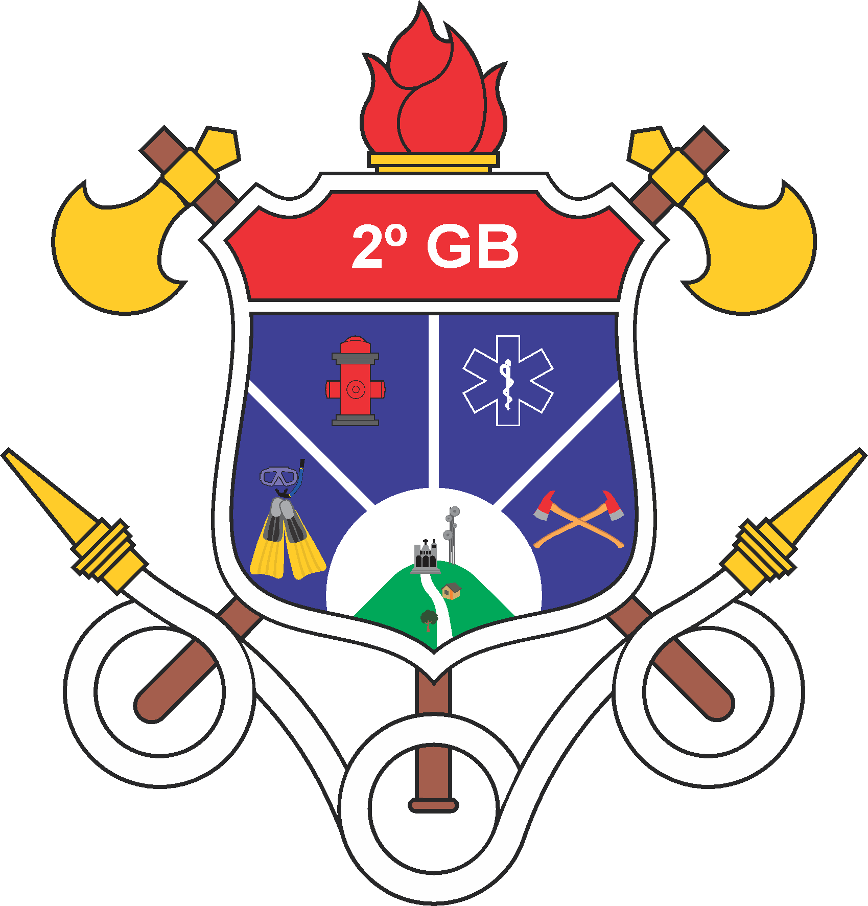

Sistema de Escalas do 2º GB. Mockup para aprovação, 23/11/2026.As peças com que todas as telas vão ser montadas: a placa do militar, o encaixe da vaga, as cores, a letra, os componentes, a resposta do sistema e a moldura da tela.
Segue as quatro decisões de 23/11/2026: a identidade fica, a base vem primeiro, cada ficha tem um salvar só e a tela inicial mostra o que falta no mês. Os nomes e as matrículas são fictícios. Nenhuma tela do site mudou ainda.
Um dia de serviço montado com as peças novas. Clique numa vaga tracejada para escolher o militar, numa placa para trocar ou remover, e em Gerar pré-escala. Avance para dezembro para ver o mês vazio e a espera.
É um exemplo para ver as peças juntas. O desenho da Escala do mês vem no mockup dela, e o do menu no mockup da navegação.
A placa é o militar. O encaixe é a vaga. O mesmo desenho vale na Grade, na Escala do mês, no Efetivo por dia e na lista de escolha.
Tracejado quer dizer sempre a mesma coisa: lugar vazio à espera.
A cor do serviço vem do cadastro e nunca fica atrás de texto. Qualquer cor que o usuário escolher continua legível.
Choque: MOURA já está no JES das 13h às 19h.
| Militar | seg23 | ter24 | qua25 | qui26 | sex27 | sáb28 | dom29 |
|---|---|---|---|---|---|---|---|
| 2º SGT BMRAMALHO | A | A | |||||
| CB BMVIEIRA | B | A | B | B | |||
| SD BMMOURA | A | B | B |
ABT
Viatura ABT-014
Comandante
MotoristaCNH D
Auxiliar
Cada cor quer dizer uma coisa só. Vinho é ação, âmbar é o que falta, vermelho é erro.
Hoje o vinho faz oito papéis e há 13 cores escritas à mão no código. Todo texto daqui tem contraste de 4,5 para 1 ou mais; contorno de campo e de botão, 3 para 1 ou mais.
#8E1B1B. Com o mouse em cima, #6F1414.
A marca e a ação principal da tela.
Deixa de ser link, botão secundário, item escolhido, fim de semana, seta e contador de faltas.
#1C2430
O texto, as ações secundárias, o item escolhido e o contorno de foco.
#8A5A00 sobre #FCF1D6
O que falta: vaga obrigatória vazia, pendência de cadastro e alteração não salva.
#B3261E sobre #FBEAE8
Só erro e choque, sempre com ícone. Nunca em aviso de rotina.
Botão vermelho cheio só existe dentro da confirmação de apagar.
A matrícula tem 6 números, um traço e 1 número.
Continuam vindo do cadastro. Aparecem só na borda da placa, na marca da Grade e no quadradinho da etiqueta. O verde de "completa" sai: era igual ao do Pronto.
Duas famílias e seis tamanhos. Barlow no texto. Barlow Semi Condensed em nomes de guerra, números e títulos, porque cabe mais na mesma largura.
Hoje são 17 tamanhos, de 10 a 48 px. O menor passa a ser 13.
| RAMALHO | 07h00 | 19h00 | 120 h |
| VIEIRA | 19h30 | 07h30 | 96 h |
| MOURA | 13h00 | 19h00 | 111 h |
As colunas de hora e de total alinham sem ajuste à mão.
Dois raios, duas sombras, um contorno de foco e uma altura de controle.
Hoje são 5 raios, 8 sombras e controles de 24 a 46 px.
Um de cada. Os campos que hoje são do navegador (lista, data, mês e arquivo) passam a ter o mesmo desenho dos outros.
O botão apagado continua com forma de botão; hoje ele parece um link fraco. O item escolhido é marcado em tinta, não em vinho.
A matrícula tem 6 números, um traço e 1 número. Exemplo: 990012-3.
Com DDD.
Rótulo em cima, ajuda embaixo e o erro junto do campo, dizendo como acertar. O campo opcional é o que avisa.
| D | S | T | Q | Q | S | S |
|---|---|---|---|---|---|---|
| 1 | 2 | 3 | 4 | 5 | 6 | 7 |
| 8 | 9 | 10 | 11 | 12 | 13 | 14 |
| 15 | 16 | 17 | 18 | 19 | 20 | 21 |
| 22 | 23 | 24 | 25 | 26 | 27 | 28 |
| 29 | 30 |
O mais e o menos passam de 24 para 36 px.
| Posto | Nome de guerra | Matrícula | Jornada | Horas no mês | Cadastro |
|---|---|---|---|---|---|
| 2º SGT BM | RAMALHO | 990012-3 | Pronto | 120 | |
| CB BM | VIEIRA | 990027-5 | Pronto | 96 | |
| SD BM | BARROS | 990038-9 | Pronto | 108 | Falta a CNH |
| SD BM | PIMENTEL | 990044-1 | Adm | 8 |
Quando não cabem, as abas rolam dentro da própria faixa e a tabela dentro do próprio quadro: a página nunca rola de lado. A pendência só aparece em quem tem pendência.
De serviço, do que falta, de erro e neutra.
Toda ação responde, e sempre no mesmo lugar: embaixo, no meio da área de trabalho. O erro aparece junto do campo ou da linha que o causou.
Hoje são 11 confirmações pela caixa do navegador, 34 esperas com a palavra Carregando e 85 avisos em frases soltas.
Com Desfazer quando dá para voltar atrás, e por isso remover deixa de pedir confirmação. Some sozinho em 8 segundos, menos o de erro, que espera a pessoa.
Um salvar por ficha, numa barra parada embaixo, no lugar do aviso. Em âmbar, porque é rotina e não erro. O bloco que vale a partir de um mês continua com a ação própria.
Ela some da lista.
Isto não pode ser desfeito. Vai junto: 14 escalas, 1 afastamento e a conta de acesso ao sistema.
Neste exemplo, 990049-6.
O máximo não pode ser menor que o mínimo, que é 1.
A escala agrupa os serviços que têm a mesma demanda.
Título, mês, ação principal, filtros e resposta ficam no mesmo ponto em todas as telas.
Tela de trabalho usa a largura toda. Tela de leitura, como cadastros e configurações, tem largura limitada.
O menu, o topo e o seletor de unidade ganham desenho próprio no mockup da navegação.
Outro desenho, e não o do computador mais estreito: alvos de 44 px, a ação principal embaixo, ao alcance do polegar, e o painel subindo de baixo.
É o mesmo exemplo de cima, com as mesmas peças. A Grade e a Escala do mês de um dia por vez vêm nos mockups delas, e as telas de consulta da fase 7 nascem primeiro aqui.
Com este mockup aprovado, a base entra no código: as cores e os tamanhos com nome, os componentes, a placa, o encaixe, a moldura e a resposta do sistema. Nenhuma regra de negócio muda.